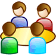

1. Introducción
He creado un calendario compartido con todos vosotros/as que podréis ver cuando entréis a la aplicación y que se llama Reuniones. Vamos a realizar una serie de operaciones básicas, siempre dentro de este calendario, sobre el que todos nosotros podemos interactuar (leer/modificar/añadir eventos).
2. Consideraciones iniciales
Vamos a preguntarnos algunas cuestiones acerca de este calendario, y lo configuraremos un poco según nos interese.

3. Adición/modificación de eventos: evento puntual.
Vamos a practicar la adición/modificación de eventos. Empecemos por unos más simple y posteriormente continuaremos con algunos más complicados.
Introduce un nuevo evento en el calendario Reuniones con la siguiente información:
Nombre del evento: Reunión <tu nombre de pila> con el Vicerrector
Día y hora: Elige el día y hora que quieras del mes de noviembre
Duración máxima: 1'30h
Lugar: Rectorado
Notificar: Avisar con una hora de antelación por correo.
- ¿Quién tiene acceso a esa información?
- Sólo con el ratón, cambia el día y hora de ese evento a otro día a otra hora (la que tú quieras).
4. Adición/modificación de eventos: evento repetitivo.

Introduce ahora un nuevo evento en el calendario compartido Reuniones con la siguiente información:
Nombre del evento: Curso de tenis
Día y hora: Lunes y miércoles, de 15.30h a 17.00h.
Lugar: Instalaciones del Servei d'Esports.
Hasta cuando: Hasta el 12 de Diciembre del 2012.
- ¿Quién tiene acceso a esa información?
- Sólo con el ratón, cambia uno de los días del evento a otro día a otra hora (la que tú quieras). ¿Qué ocurre?
5. Creación de un grupo de contactos

Probemos ahora a crear un grupo de contactos, es muy útil para gestionar citas compartidas en Google Calendar, para hacer envíos de correo en Grupo, o para compartir documentos con Google Docs.
- Añademe a mi y a ti a un nuevo grupo llamado "Curso Google Calendar".
6. Configuración y creación de un nuevo calendario
- Crea ahora un nuevo calendario personal llamado "Deporte", le daremos un color morado a los eventos, le diremos que nos avise con 2 horas de antelación de los eventos de ese calendario por correo, y compartidlo conmigo, o quien queráis, en modo solo lectura.
- Mueve el evento de la partida de tenis creado anteriormente a este nuevo calendario.
- ¿Qué opináis sobre los calendarios compartidos?
7. Crear eventos e invitaciones a través del correo
Veamos como se une la gestión de un evento de calendario, compartido con gente, y además con información típica de un correo electrónico.
- Crea un correo electrónico, dirigido al grupo "Curso Google Calendar".
- Pulsa sobre el botón Insertar invitación y añade algunos datos de calendario
- Envía el correo para ver lo que ocurre.
¡Ya hemos terminado! ¿Fácil no?